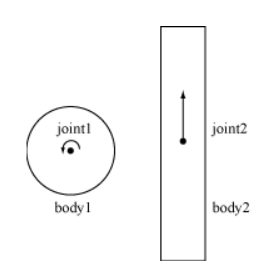

Create a GearJoint connecting two Joints.
The gear joint connects two joints that must be either prismatic or revolute joints. Using this joint requires that the joints it uses connect their respective bodies to the ground and have the ground as the first body. When destroying the bodies and joints you must make sure you destroy the gear joint before the other joints.
The gear joint has a ratio the determines how the angular or distance values of the connected joints relate to each other. The formula coordinate1 + ratio * coordinate2 always has a constant value that is set when the gear joint is created.

| Available since LÖVE 0.8.0 |
| This variant is not supported in earlier versions. |
joint = love.physics.newGearJoint( joint1, joint2, ratio, collideConnected )
Joint joint1Joint joint2number ratio (1)boolean collideConnected (false)GearJoint joint| Removed in LÖVE 0.8.0 |
| This variant is not supported in that and later versions. |
joint = love.physics.newGearJoint( joint1, joint2, ratio )
Joint joint1Joint joint2number ratio (1)GearJoint joint